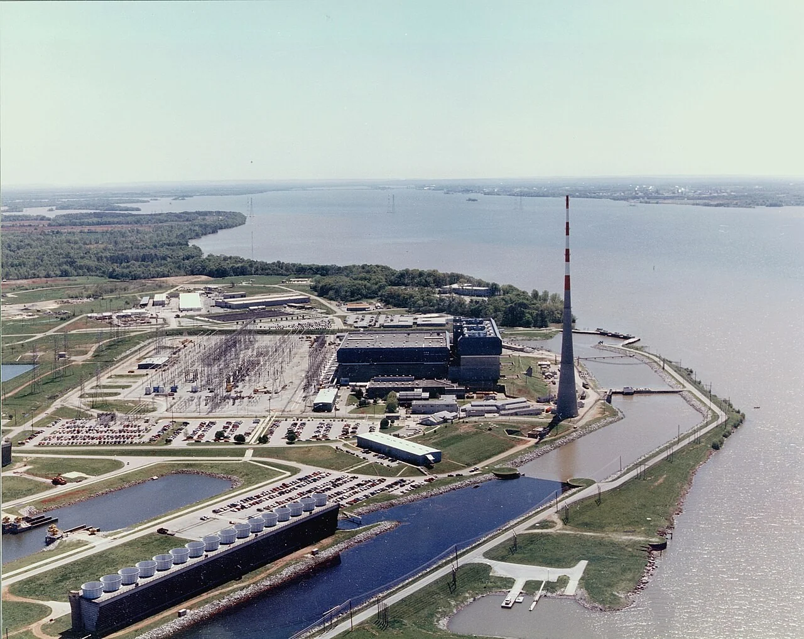
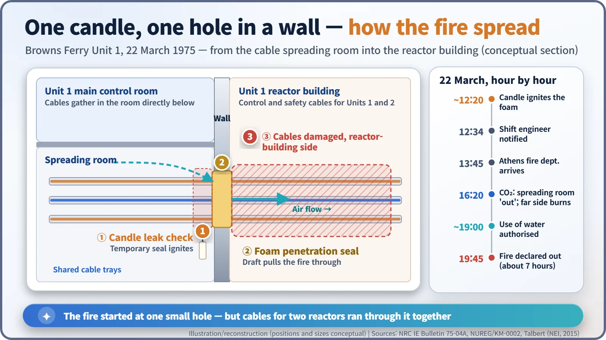
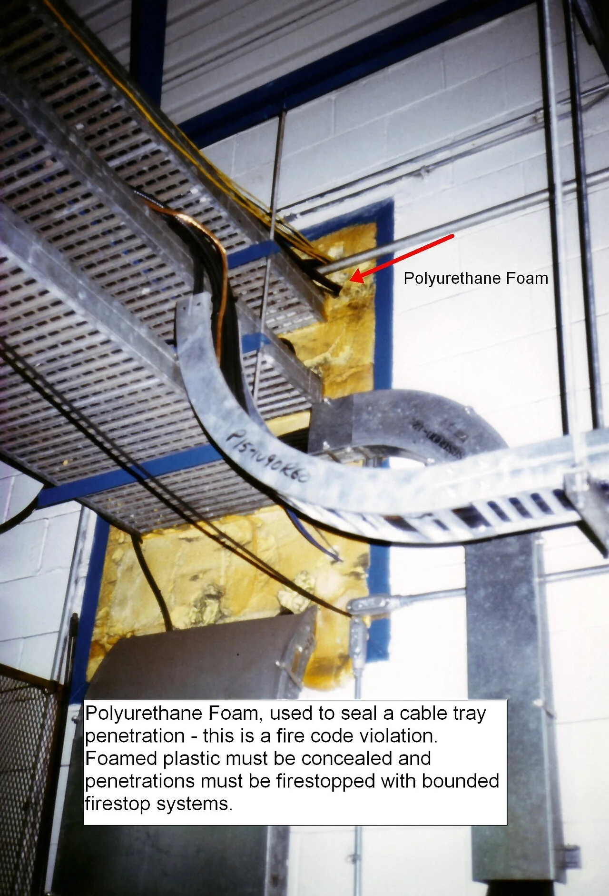
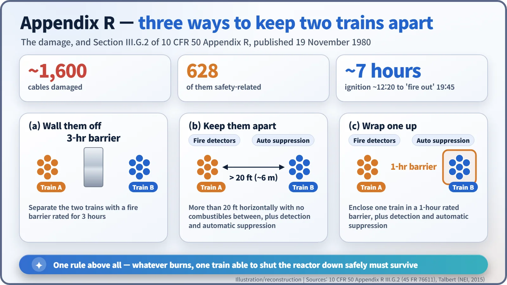

Nuclear History · 239
One Candle That Rewrote the Rules — the Browns Ferry Fire of 1975 and the Birth of Appendix R
A temporary foam seal caught fire, about 1,600 cables burned, and both safety trains on Unit 1 were hit at once, so the rules were rewritten to keep them apart.
On 22 March 1975 a worker checking for air leaks with a candle set fire to a temporary foam seal at the Browns Ferry nuclear plant in Alabama. The fire burned for about seven hours, damaged about 1,600 cables, and knocked out both redundant trains of safety equipment on Unit 1, yet operators kept the core covered with improvised means. It led directly to the NRC's fire-protection rule and Appendix R of 1980.
A candle at a hole in the wall
Hold a candle up to a gap in a wall and you can tell at once whether air is leaking: the flame leans toward the hole. On the afternoon of Saturday 22 March 1975, workers at the Browns Ferry nuclear power plant in Alabama were using exactly that trick. That day the flame did more than lean. It was drawn into the hole, and after that the fire-protection rules for American nuclear plants had to be rewritten.

A new plant and a two-month-old regulator
Browns Ferry, built by the Tennessee Valley Authority (TVA) beside the Tennessee River, was planned as a three-unit site of boiling water reactors (BWRs), each in the 1,000-megawatt class. A BWR boils water inside the reactor and sends the steam straight to the turbine. In March 1975 Units 1 and 2 were operating; Unit 3 was still under construction. [5]
The regulator was new too. The Nuclear Regulatory Commission (NRC), created to separate the job of policing nuclear power from the job of promoting it, had opened its doors on 19 January 1975, barely two months earlier. Fire was not entirely absent from the rulebook. Criterion 3 of the General Design Criteria, issued in 1971, said that structures, systems and components important to safety "shall be designed and located to minimize, consistent with other safety requirements, the probability and effect of fires and explosions." But that was a principle, not a set of instructions. [2]
12:20 p.m.: a temporary seal catches fire
The fire began in the cable spreading room, directly beneath the Unit 1 main control room, where thousands of cables gather before fanning out to equipment around the plant. A design change meant more cables had to be run through a penetration in the wall between this room and the Unit 1 reactor building. The seal had been opened, and workers were closing it again. They were checking a temporary filling of polyurethane foam for air leaks with a candle when, at about 12:20 p.m., the foam ignited. It had been painted with a flame-retardant coating, but it was not a qualified fire stop. [1] [4]
The workers beat at the flames with rags and used portable extinguishers. What they did not realise was that air was being drawn through the penetration toward the reactor building. On their side the fire stayed close to the hole; on the far side of the wall it was running along the cable trays. As the NRC's bulletin of 3 April 1975 put it, the fire on the reactor-building side went unrecognised until significant damage had been done to cables controlling Units 1 and 2. [1]

Water or no water: seven hours
The fire department from nearby Athens, Alabama, arrived at 1:45 p.m. A fixed carbon-dioxide system was discharged in the spreading room, and at 4:20 p.m. the fire there was reported out, but the reactor-building side was still burning. The firefighters wanted to use water. Plant staff considered spraying water onto live electrical equipment too risky. When water was finally authorised at about 7 p.m., the fire was brought under control quickly, and it was declared out at 7:45 p.m., about seven hours after it started. [4]
Improvised cooling for Unit 1
Meanwhile Unit 1 had lost the control circuits of many systems that could have cooled it, including its emergency core cooling systems. Operators shut the reactor down by hand, opened relief valves by remote manual control to bring the pressure down, and then fed water in with equipment never meant for emergencies: a condensate booster pump and the control rod drive pumps. According to later accounts, the water level above the core dropped from its normal level of about 16 feet to about 4 feet before it recovered. Unit 2 was cooled for its first hour by its reactor core isolation cooling system and then shifted to shutdown cooling. No injuries and no release of radioactivity were reported. [1] [4]
Two safety trains, one corridor
About 1,600 cables were damaged, 628 of them safety-related. The real shock, though, was not the number but the layout. Safety systems in a nuclear plant are duplicated in two "trains," so that if one fails the other can do the job. At Browns Ferry, cables for both trains ran through the same room and the same route, so one fire threatened both. Engineers call this a common-cause failure: a single cause that defeats several layers of protection at once. It is like building two fire exits and putting both at the end of the same corridor. [4]

Appendix R, and unfinished business
Within days the NRC sent bulletins to plant operators. A special review group's recommendations, NUREG-0050, followed in February 1976, and in May 1976 new fire-protection guidance (Branch Technical Position 9.5-1) asked every plant to carry out a fire hazards analysis. Then, on 19 November 1980, the NRC published its fire-protection rule, 10 CFR 50.48, together with Appendix R to 10 CFR Part 50, effective in February 1981. [2]
The heart of Appendix R is simple: whatever burns, at least one train able to shut the reactor down safely must survive. Where both trains share a fire area, Section III.G.2 offers three ways to protect one of them:
- a fire barrier rated for three hours between them;
- more than 20 feet (about 6 m) of horizontal separation with no combustibles in between, plus fire detectors and automatic suppression;
- one train wrapped in a one-hour fire barrier, again with detection and automatic suppression.

The price, and the lesson
The cost was high. Direct damage came to about $10 million, but the indirect losses, mostly replacement power bought during a recovery of around 18 months, were estimated at $300–500 million in 1976 dollars. Retrofitting existing plants took years, and anti-nuclear groups criticised the exemptions some plants were granted. In 2004 the NRC opened an alternative path, allowing plants to adopt NFPA 805, a performance-based standard that weighs fire risks plant by plant. [4]
Remembering Browns Ferry only as one worker's mistake misses half the lesson. It took an uncertified temporary seal, modification work on an operating unit, redundant trains routed side by side, and a firefighting habit of avoiding water, all at once.